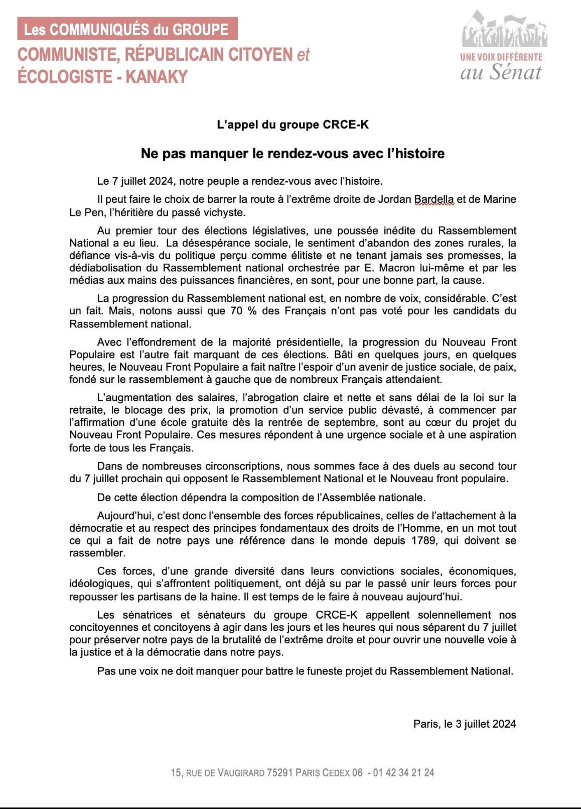

Appel relayé
« Ne pas manquer le rendez-vous avec l’histoire ». L’appel des sénateurs communistes
Date indiquée par Facebook · 3 juillet 2024
Repères éditoriaux
Nous avions relayé l’appel du groupe CRCE-K avant le second tour des élections législatives du 7 juillet 2024. Son texte figure dans le communiqué joint.
Texte conservé avec la publication
Un appel du groupe communiste du Sénat CRCE-K

Sources
Archive rouge · export Facebook · AR-0002-FB-01331
À lire aussi · Second tour des législatives. Notre appel du 5 juillet